Beta Sammy
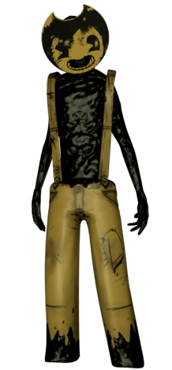 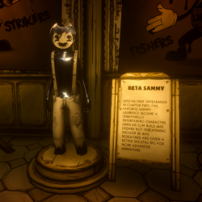Beta Sammy, who was supposed to be scary, was deemed not threatening with his slim build and little to no movement, which was changed in his next update. Beta Sammy's body structure was slenderand inhuman skin texture. His overalls looked loose and seemed like he had no feet, which when he walked, it looked like when you get gum stuck to the bottom of your shoes, which again, was changed in his next update. In the cutscene he would just standstill and do nothing, which was changed to look more alive.
Sammy Lawrence
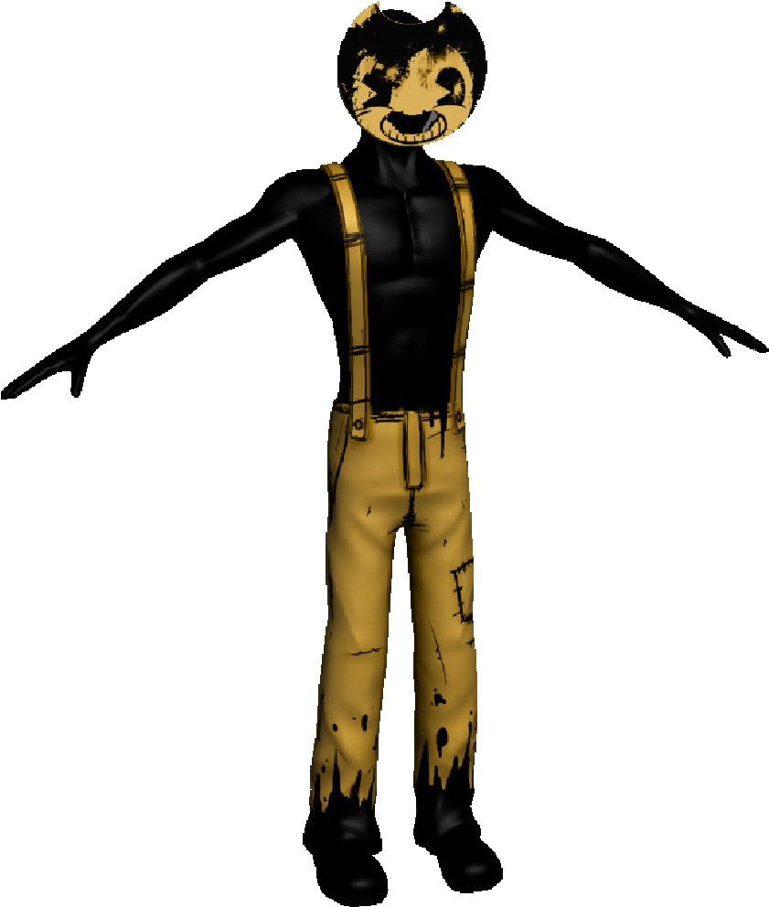 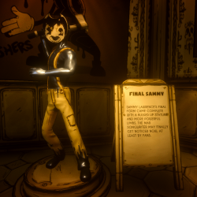 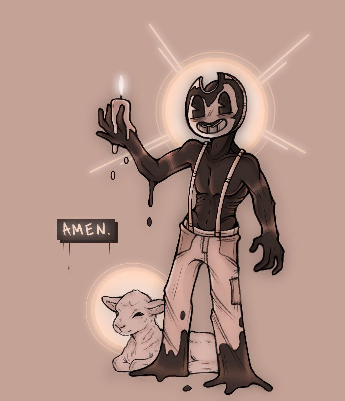Samual "Sammy" Lawrence is a character who's muscular with ovralls and a slightly smudged Bendy mask with a hole punched in the mouth. Due to the ink, he has no viible hair, but still remaining in a human-like shape. Unlike a human, however, he has four fingers on both hands like a cartoon character. His overalls look similar to Boris the wolf's overalls with a patch on the left knee with his shoes and bottom of the overalls covered in ink. He has no facial features or ears, but only has eye sockets to see out of. In game you see Sammy Lawrence as a somewhat kind of psychotic or unhinged and a bit fanatical fir worshiping Bendy and calling his sacrifices "sheep". However, when Sammy was a human, he was a grumpy, over-worked, and mentally unstable due to lack of sleep. Towards the end of chapter two, Bendy killed Sammy Lawrence, because of this, his attitude chaged from psychotic to insaine and tries to kill Henry on chapter five, along with his voice changed from calm to anger and demonic affect. Once Henry knocks off the mask, he runs away terriffied not wanting Henry to look at him.
Beta Boris

Beta Boris or "Papa", as was going to be named but then changed. We first see "Papa" when we enter chapter one, as chapter two was in the making. This version of Boris was drenched in black ink, with oversized boots gloves, and an exposed ribcage. The ribs are poking out showing a hallow inside. His eyes are "X"ed out and his mouth opened wide, indecating that he's dead. After the update, He's been made taller with overalls. The shoes were braught back in chapter four, in the room where the creepy Bendy costumes are.
Boris the Wolf
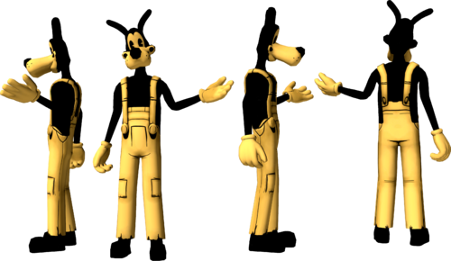 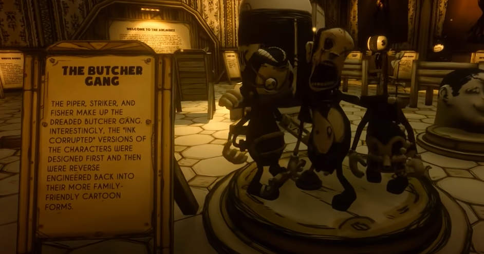 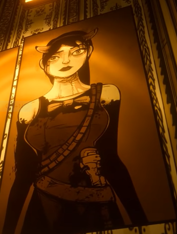Boris the wolf was another character that Henry is assumed to have created but Joey Drew stole, but Boris the Wolf starred in the seies of Bendy shorts, along with other characters. Boris was created for a best friend for Bendy and so things wouldn't get so boring with just Bendy. Boris is a tall anthropomorphic wolf, his ears sticking straight up in the air, with overalls and a pair of black boots. Boris's overalls have patches on both knees and blank white gloves. Boris is the tallest creation with rosy cheeck, freckles, and long ears. Boris loves food, he would choose food ofer friends as in the employee handbook states, "Through it all, Boris stays loyal to his friends, so as long as they don't come between him and his lunch!". Boris is a simple minded character and comes off as lazy.
Beta Searcher
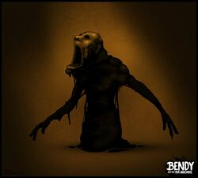 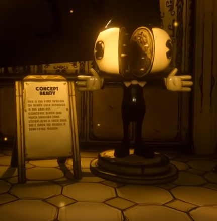These searchers were the first enemies to evr be fought in batim history. They were created a few weeks before chapter two was fully released. The searcher's name was originally going to be "Seekers" but was later changed in development. The beta searcher's model resembles their consept art, but they were slower and fragile, and instead of crawling like the newer one, they swayed their arms to move. These were a one-hit-to-kill type of monsters.
Searcher
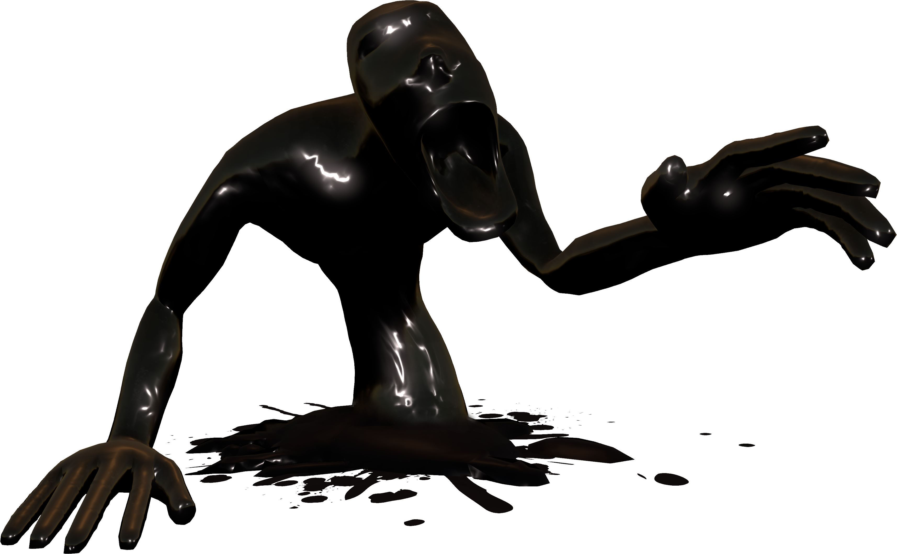
These Searchers has a more robust appearance then their former selves. These searchers are human-like creatures entirely made with ink and are a bit smaller than Henry. They don't have legs, instead, their waist are in the ground, and they have a springy, and bouncy, flexible body. It's body is made of ink, and it's face has two eye sockets with a big gaping mouth. Before they pop up from the ground, they pop up in these inky puddles. You can kill them in one hit if you hit them directly on the head, otherwise you'd have to hit them twice. It is assumed that searchers were former workers that were failed experiments.